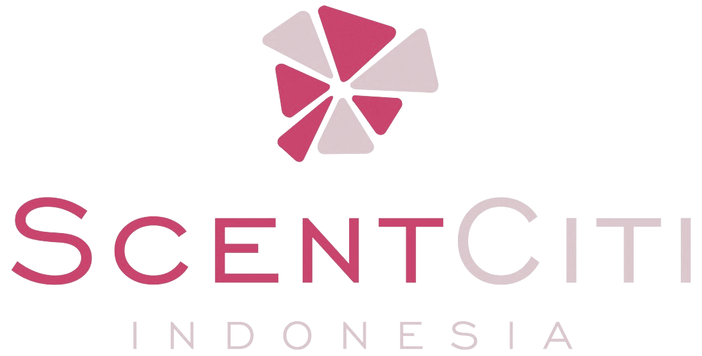

01 / Access
01 / Access
International
fragrance network
Access to a broad and continuously growing fragrance portfolio developed beyond Indonesia.
UK · SG

For brands that want to be
felt before they are remembered.
Our perspective
A fragrance is never only an ingredient.
Scent Citi connects Indonesian businesses with international fragrance expertise—bringing creative direction, a growing scent library, and responsive local support into one closer partnership.
Explore our expertise ↘
Technical understanding behind every application.

A sensory language that stays with people.
Applications
Each product carries scent differently. We help find the right balance of character, application, and performance.
Distinctive signatures for skin, identity, and personal expression.

Sensorial character created for daily rituals and formulations.

Atmospheres that define spaces and influence how they feel.

Freshness engineered to bloom, perform, and remain.

The bridge
International fragrance creation becomes more useful when paired with market context, clear communication, and support close to home.
01 / Access
Access to a broad and continuously growing fragrance portfolio developed beyond Indonesia.
UK · SG 02 / Understanding
02 / Understanding
A closer view of customer expectations, climate, applications, and commercial realities.
ID 03 / Choice
03 / Choice
Known codes for existing customers. Guided discovery for brands searching for a new direction.
900+How we work
A considered process for discovering, testing, and sourcing fragrance—without losing the human conversation behind it.
Bring a product code, a reference, or simply the feeling you want to create.
Define the application, audience, performance, and commercial direction.
Sample and assess the fragrance within the intended product base.
Move from an approved direction to reliable local distribution.
Digital catalogue
In development · 900+ fragrances
Our digital scent library is being designed for both: fast access for established customers and guided discovery for growing brands.
Explore SC—0241 AMBER · WOODY
SC—0241 AMBER · WOODY SC—0318 FLORAL · MUSK
SC—0318 FLORAL · MUSK SC—0492 CITRUS · GREEN
SC—0492 CITRUS · GREENBegin a fragrance conversation
Share the product, direction, or fragrance code you have in mind. We will help define the next step.
Start a project ↗